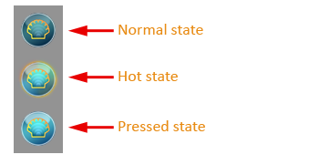
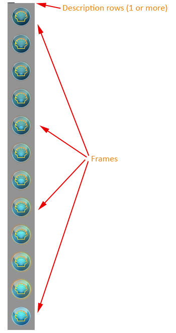
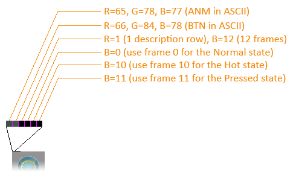
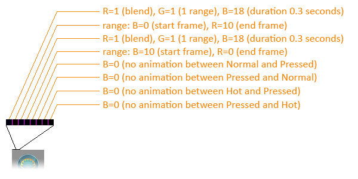

カスタムスタートボタン チュートリアル
シンプルなスタートボタン
カスタムスタートボタンには、3つの異なる部分を含む画像が必要です。1つはボタンの通常状態、1つはホット状態（マウスがボタンの上にあるとき）、もう1つは押された状態です。3つの部分は同じサイズでなければなりません。

デフォルトでは、スタートボタンの幅は画像の幅と同じになります。ボタンの高さは、画像の高さを3で割った値になります。Open-Shellの設定でボタンの幅を上書きすることで、画像を拡大縮小できます。高さはアスペクト比を保つように調整されます。
画像はPNGまたはBMP形式（32ビットBMPファイルを含む）で保存する必要があります。最良の結果を得るには、Photoshop、Gimp、Paint .NETなど、透過をサポートする画像編集ソフトを使用してください。
ダウンロード先
スタートボタンの画像はインターネット上で多数見つけることができます。以下はその一部です：
http://www.classicshell.net/forum/viewforum.php?f=18
https://www.sevenforums.com/themes-styles/34951-custom-start-menu-button-collection.html
https://www.sevenforums.com/customization/78291-big-group-custom-start-orbs.html
https://tutoriales13.deviantart.com/art/Orbs-153450418
https://www.deviantart.com/?q=start+button+orb
アニメーションボタン
Open-Shellはアニメーション化されたスタートボタンをサポートしています。これらは異なる状態間のアニメーション遷移を含みます。
アニメーション画像は、アニメーションを記述する1行以上のピクセル行と、それに続く1つ以上のボタンフレームで構成されます。記述行は完全に不透明（A=255）である必要があります。フレームは0から数えられます — frame0、frame1、…。すべてのフレームは同じサイズでなければなりません。

メイン情報（最初の6ピクセルに格納）
最初の行の最初の2ピクセルは次のようにする必要があります：
ピクセル0： 色 R=65, G=78, B=77（これはASCIIでテキスト「ANM」）
ピクセル1： 色 R=66, G=84, B=78（これはASCIIでテキスト「BTN」）
これらにより、スタートボタンはこの画像がアニメーションを含むことを認識できます。
次のピクセルは、フレーム数と記述行数を示します：
ピクセル2： 赤チャンネルには記述行数（通常は1）が含まれます。青チャンネルにはビットマップ内の総フレーム数が含まれます（これによりフレーム数は255に制限されます）。
1行でアニメーションを記述するのに不十分な場合は、2行以上に続けることができます。
このピクセルの内容と画像の総サイズによって、個々のフレームのサイズが決まります。記述行数（赤チャンネル）を画像の総高さから引き、それをフレーム数（青チャンネル）で割ります。
次の3ピクセルには、スタートボタンの3つの異なる状態 — 通常、ホット、押された状態 — のフレームが含まれます。
ピクセル3： 青チャンネルには通常状態のフレームのインデックスが含まれます（通常は0）
ピクセル4： 青チャンネルにはホット状態のフレームのインデックスが含まれます
ピクセル5： 青チャンネルには押された状態のフレームのインデックスが含まれます

遷移
残りのピクセルは、異なる状態間の遷移を次の順序で記述します：
- 通常 → ホット
- ホット → 通常
- 通常 → 押された状態
- 押された状態 → 通常
- ホット → 押された状態
- 押された状態 → ホット
各遷移の最初のピクセルの青チャンネルには、アニメーションの継続時間が1/60秒単位で含まれます（つまり60は1秒を意味します）。これが0の場合、遷移はありません。
緑チャンネルには、続くフレーム範囲の数が含まれます。これが0の場合、遷移は開始状態から終了状態への直接遷移になります。
赤チャンネルは、フレーム間でクロスブレンドするデフォルト動作の場合は1、ブレンドを無効にする場合は0です。
次のいくつかのピクセルには、状態間のアニメーションを構成するフレーム範囲のペアが含まれます。その数は遷移の最初のピクセルの緑チャンネルにあります。範囲の最初のフレームは青チャンネルに、最後のフレームは赤チャンネルにあります。範囲の最初と最後のフレームが異なる場合、両方のフレームとその間のすべてのフレームが含まれます。
最初と最後のフレームが同じ場合、その範囲は単一のフレームを識別します。これにより、アニメーションの各フレームを正確に選択できます。

この例では、通常→ホットのアニメーションにはフレーム0から10が含まれます。それらは0.3秒間再生され、フレーム間のブレンドを許可します。ホット→通常のアニメーションは同じですが逆順です — フレーム10からフレーム0へ再生されます。
他の4つの遷移は空です。
Open-Shellの制限事項
このフォーマットは非常に柔軟で、すべての状態間のカスタムアニメーションを可能にしますが、Open-Shellはすべての機能をサポートしているわけではありません。
- 通常状態とホット状態の間のアニメーションのみをサポートします。押された状態を含む遷移は、応答性を向上させるために即時になります。
- 通常状態とホット状態の間のアニメーションは、双方向で同じ（または類似の）フレームを使用する必要があります。場合によっては、2つの遷移を異なる速度で再生できます。その理由は、アニメーション中の任意の時点で中断され、反対のアニメーションが現在のフレームから開始される可能性があるためです。これは、マウスがスタートボタンに出入りするときに発生する可能性があります。
このシステムでは、単一の画像でボタンを作成することもできます。ピクセル3から11を0に設定するだけです。すると、フレーム0がすべての状態に使用されます。